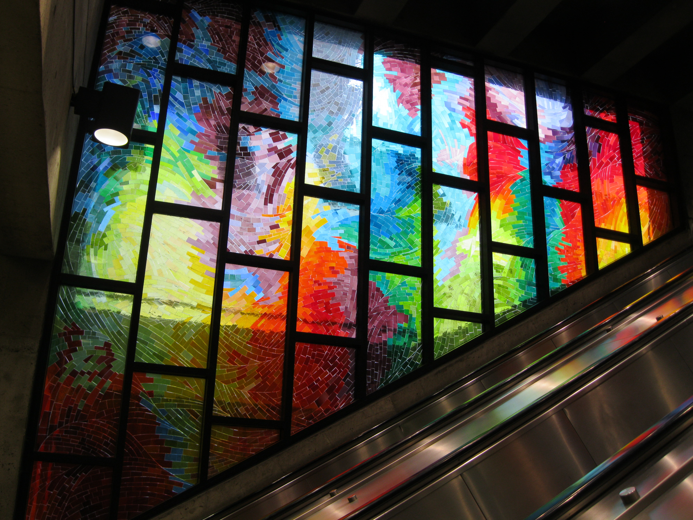

Charlevoix Station, Montreal, Canada
Designed by Ayotte et Bergeron, it was built as a stacked platform station, in order to reduce the width of the station owing to the weak Utica Shale in which it was built. The lower (Honoré-Beaugrand) platform is 29.6 m (97 ft 1 in) below the surface, making this the deepest station in the network, as well as the lowest in altitude (the lower platform is below sea level).
The station has one ticket hall and one access. The long stairways to the platforms, built around a light shaft, are brightened by two stained-glass windows by Mario Merola and Pierre Osterrath.
